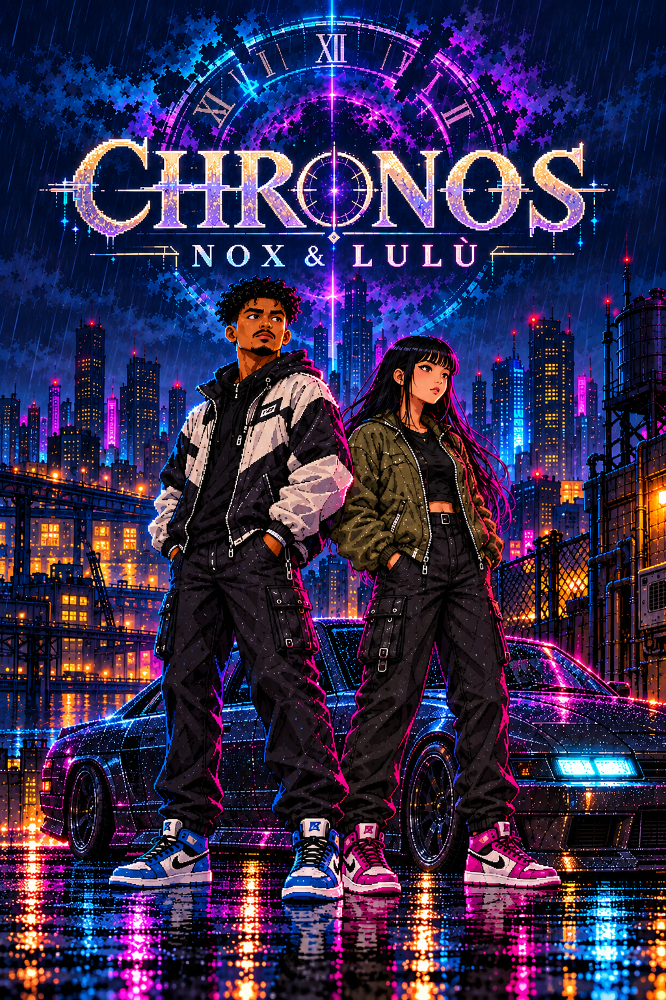
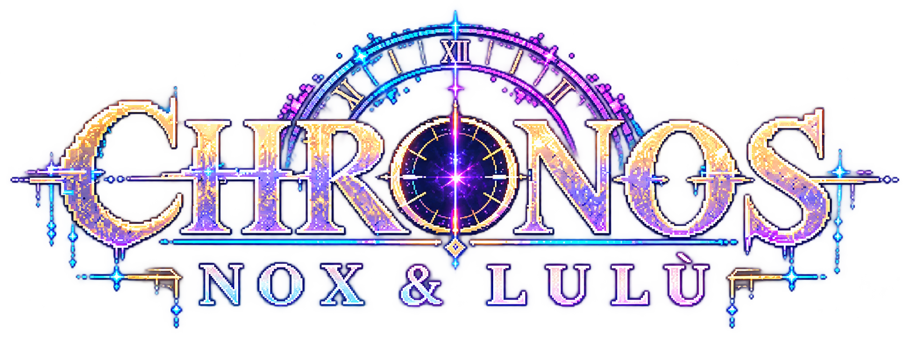
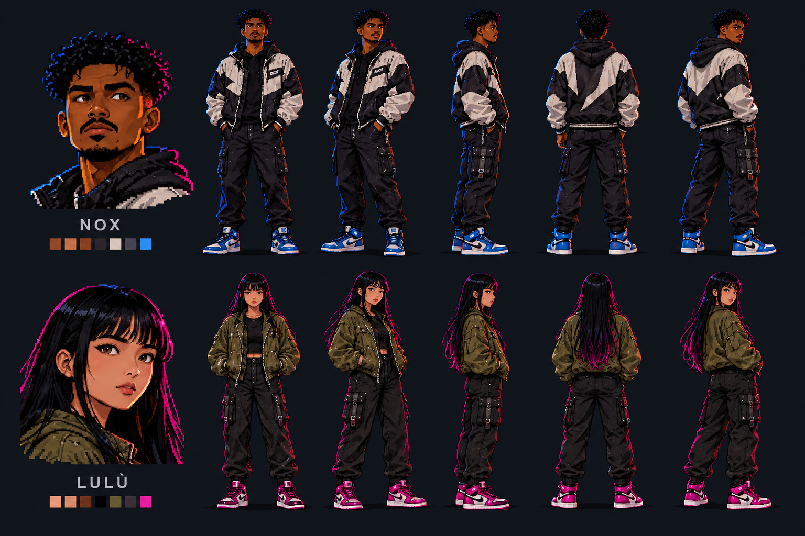
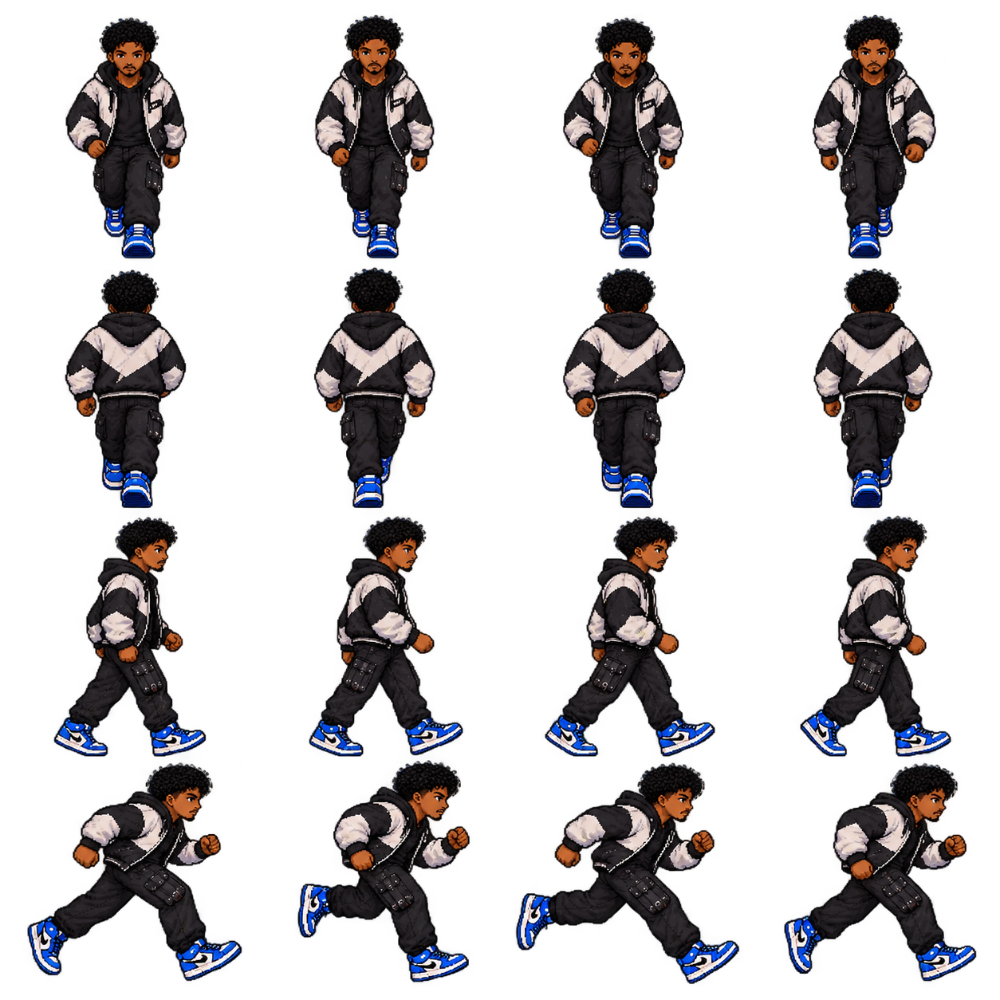
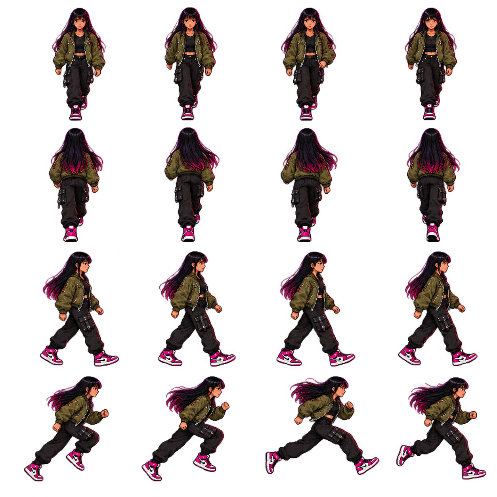
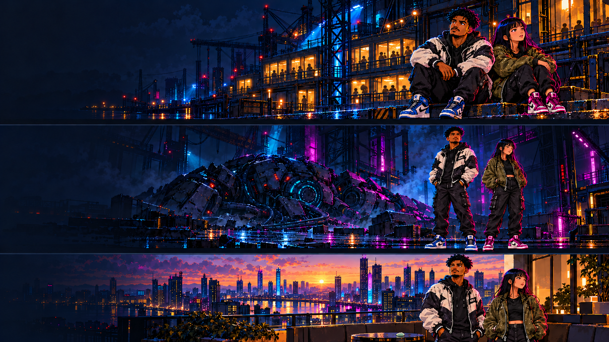
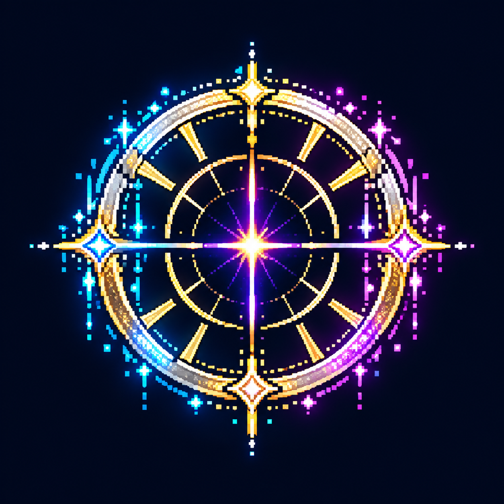

Copertina verticale




PNG con trasparenza. Verifica di leggibilità in miniatura e approvazione artistica pendenti.

Candidati in quarantena: dimensioni generate 1254×1254, diverse dal contratto 1024×1024. Non vengono usati dal gioco.



Testi e ricompense restano nell’interfaccia localizzabile. Nessun perdono o contatto fisico obbligatorio.

Due brani e due effetti generati. Decodifica e livelli verificati; ascolto umano, loop e integrazione nel gioco ancora pendenti. Un solo lettore suona alla volta.
Quota di prova esaurita: il resto del lotto non è stato generato.